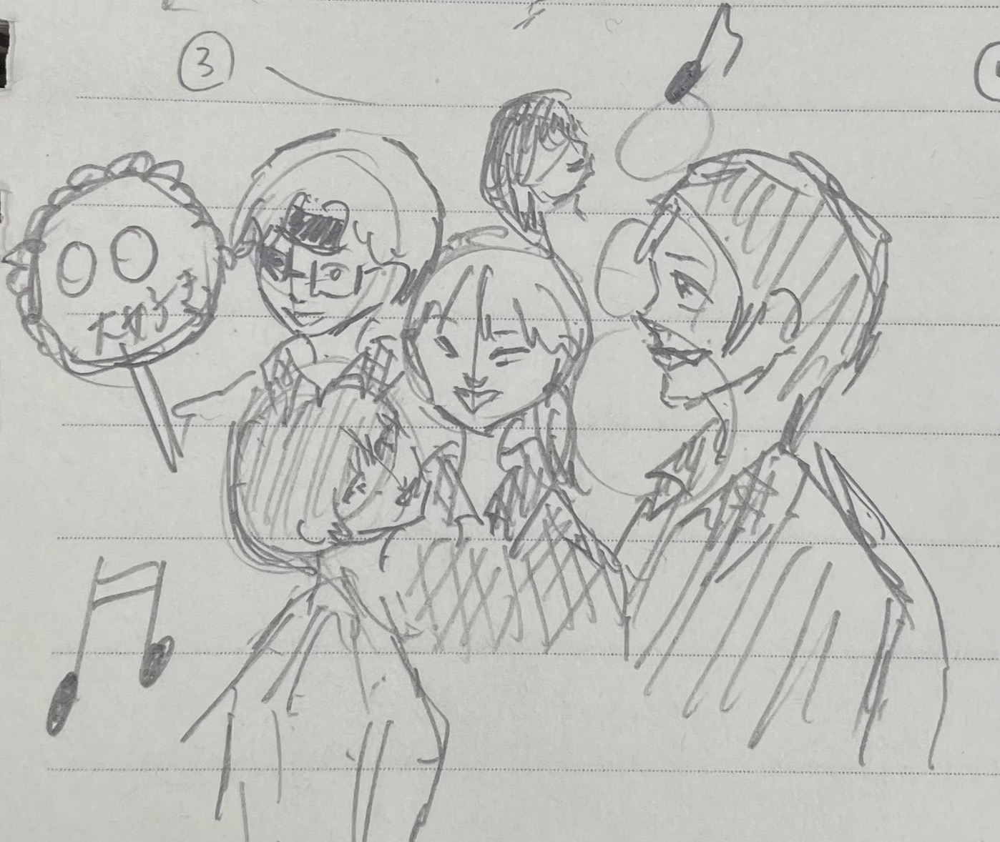
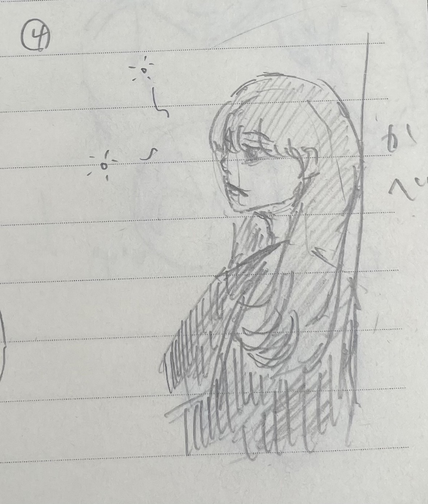
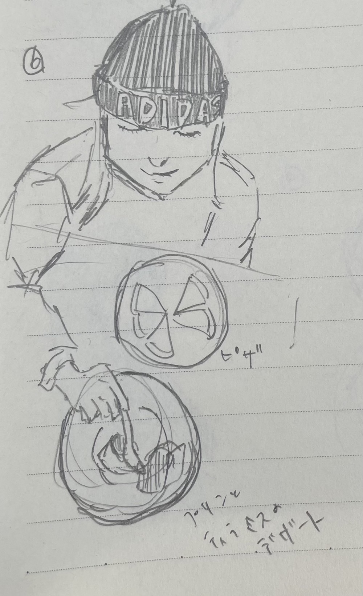

デジタルファブリケーション
第4回 design for others
電車の中で意図せず睨んでいるようにみえてしまっている人への商品
スマホケースの裏にメッセージカード的なもの入れて周りの人の恐怖心を和らげる。


ic card のサイズならスマホケースに挟めると予想。
ic card のサイズは54mm×85mm×1mm
エントリーナンバー２
夜の東京駅前で人目気にせずいちゃつくカップル

エントリーナンバー３
インカレで三年生の引退を惜しんでヲタク化している後輩たち

エントリーナンバー４
深夜練習明け限界突破した友達

エントリーナンバー５
インカレで先輩のおさがりの服をもらえるフリマで憧れの先輩にたかる後輩たち

エントリーナンバー６
サイゼリアのピザとプリンとティラミスのデザートをあえて交互に食べて味変を楽しむという独特な味わい方をする関西人の友達
